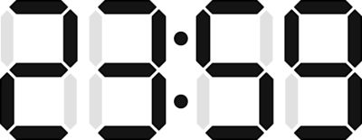
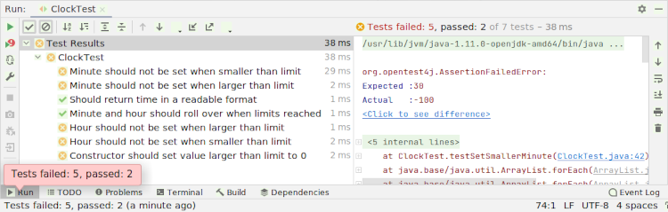
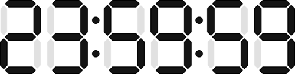

Klok¶

Doel¶
Het ontwerpen van klassen
Denken over abstractie en modulariteit
Inleiding¶
In het hoofdstuk Designig Classes, wordt een klasse Time besproken voor het representeren van tijd. Het is een kennismaking met de verschillende onderdelen van een Java klasse zoals velden, constructors en methoden. De implementatie van deze klasse is niet volledig logisch correct, het is je misschien opgevallen dat bijvoorbeeld met de mutator methoden (de setters) uren, minuten en seconden op elke mogelijke waarde kunnen worden gegeven:
public void setHour(int hour) {
this.hour = hour;
}
public void setMinute(int minute) {
this.minute = minute;
}
public void setSecond(double second) {
this.second = second;
}
De waarden moeten natuurlijk eerst gecontroleerd worden voordat ze worden gezet, uren tellen immers van 0 tot 24 en minuten en seconden van 0 tot 60. De volledige klasse Time kan je hier teruglezen.
In deze opgave is de klasse Time als basis gebruikt voor Clock, een klasse die een digitale klok representeert met uren en minuten (geen seconden). Met elke aanroep van de methode tick wordt één minuut bij de klok opgeteld.
De klasse Clock kan je vinden in het projectbestand clock.zip. Download dit bestand en pak het uit en importeer het project in jouw IDE. Het bevat een Maven projectconfiguratie, zie ook de opgave Cone voor hoe je dit gebruikt.
Je zal de volgende projectstructuur zien:
.
├── part_2
│ └── NumberDisplayTest.java
├── pom.xml
└── src
├── main
│ └── java
│ └── Clock.java
└── test
└── java
└── ClockTest.java
In deze opgave ga je unittests gebruiken, bekijk ook de opgave Cone over hoe je deze tests kan uitvoeren.
Deel 1: reparatie¶
De klasse Clock is gebaseerd op de klasse Time en bevat dezelfde fouten. Voer de unittest ClockTest uit om inzicht te krijgen in welke tests falen.

Bestudeer de code in ClockTest voor de falende tests, deze geven een indicatie van gewenst gedrag. Pas vervolgens de code in Clock aan zodat alle tests uiteindelijk slagen.
Bedenk ook dat soms methoden vereenvoudigd kunnen worden, bijvoorbeeld hoe zou je de methode printTime gebruik kunnen laten maken van de methode toString?
Deel 2: modularisatie¶
Abstractie¶
Een display van een klok kan je zien als een display met vier tekens (twee voor de uren en twee voor de minuten). Laten we nu op zoek gaan naar wat de gemenschappelijke kenmerken zijn voor de uren en de minuten want het display kan je ook zien als twee afzonderlijke displays met elk twee cijfers (één paar voor uren en één paar voor minuten).
Als we kijken naar gedrag zal één paar beginnen bij 0 en en telkens met 1 worden verhoogd tot het maximum van 23 wordt bereikt (uren), de ander zal van 0 tot een maximum van 59 lopen (minuten). Meer algemeen kan je zeggen dat beide objecten zijn die tellen van 0 tot een bepaalde limiet, waarna weer wordt begonnen met tellen vanaf 0 (ze lopen over).
Modulariteit¶
Het algemene gedrag dat we zojuist hebben geabstraheerd kunnen we vastleggen in een een definitie, oftwel een klasse. Ook vanuit het oogpunt van het scheiden van verantwoordelijkheden valt daar iets over te zeggen, de eigenlijke verantwoordelijkheid van een Clock is het organiseren en beheren van displayelementen, en niet het specifieke gedrag daarvan.
Als je verder denkt zou volgens dit principe ook eenvoudig seconden of misschien zelfs een display met ochtend- of middagtijd mogelijk zijn als uren tot 12 in plaats van 24 lopen (AM of PM, bijvoorbeeld met 0 tot 2 als bereik).
De klasse NumDisplay¶
Volgens dit idee van modulariteit ga je een klasse NumDisplay schrijven die verantwoordelijk is voor een enkel element van een display. Deze klasse beheert een enkele waarde met een bijbehorende limiet.
Verplaats de unittest NumberDisplayTest.java die je kan vinden in part_2/ naar src/test/java/ (de directory part_2 kan je vervolgens verwijderen). Deze unittest bevat tests voor het te verwachten gedrag, implementeer de klasse NumberDisplay volgens deze specificatie. Voorlopig hoef je met de klasse Clock nog niets te doen, dit zal volgen in deel 3.
Tip
Je zal zien dat de unittest een methode increment verwacht voor het vehogen van de waarde van NumberDisplay én dat het verwacht dat deze waarde terug wordt gezet als een limiet is bereikt. In de klasse Clock gebeurt dit met if-statements in de methode tick. Bedenk dat je voor deze overloop ook de modulo operator % kan gebruiken voor een meer algemene implementatie van dit gedrag, bijvoorbeeld
int limit = 5;
int value = 6;
value = value % limit; // value is now 1
Zorg dat alle tests slagen voordat je verder gaat met het laatste deel van deze opgave waar Clock de klasse NumberDisplay gaat gebruiken.
Deel 3: integratie¶
De klasse Clock kan nu vereenvoudigd worden omdat de functionaliteit van een displayelement is verplaatst naar NumberDisplay. Je zal nu moeten refactoren om gebruik te gaan maken van deze nieuwe klasse.
De eerste stap zal zijn om om de typen van de velden hour en minute te wijzigen van int naar NumberDisplay. Vervolgens pas je de constructors aan om deze velden als NumberDisplay te zetten voor uren en minuten. Tot slot pas je de methoden aan die gebruik maken van deze velden.
De unittest ClockTest blijf je steeds bij al deze stappen uitvoeren voor het controleren van jouw aanpassingen. Het is belangrijk te beseffen dat de interface van Clock niet verandert en je alleen maar de interne werking aan het aanpassen bent. De unittest controleert of de interface ongewijzigt blijft, het maakt voor de tests niets uit of je NumberDisplay wel of niet gebruikt zolang het gewenste gedrag maar niet verandert.
Trapsgewijs verhogen
De methode increment in de klasse NumberDisplay geeft een boolean waarde terug om aan te geven of de waarde een limiet heeft bereikt en is teruggesprongen. Als dit gebeurt voor minuten, dan zal ook de waarde van uren ook moeten worden geïncrementeeerd. Hoe zou je deze trapsgewijze (of cascading) incrementatie met behulp deze boolean returnwaarde kunnen uitwerken?
Deel 4: expansie¶
Nu de aanpassingen van Clock compleet zijn ga je het display uitbreiden met een display dat ook seconden toont.

In dit geval wordt de interface van de klasse Clock wél aangepast, bijvoorbeeld omdat nu seconden kunnen worden gezet en ook het volledige display wordt gewijzigd (3 displayelementen in plaats van 2), denk hier aan de methoden toString.
Pas de unittest
ClockTestaan (of breid uit) om het gewijzigd gedrag te kunnen testen.Breid de
Clockuit met een display voor seconden.Test de wijzigingen (en keer terug naar stap 2 als tests falen).